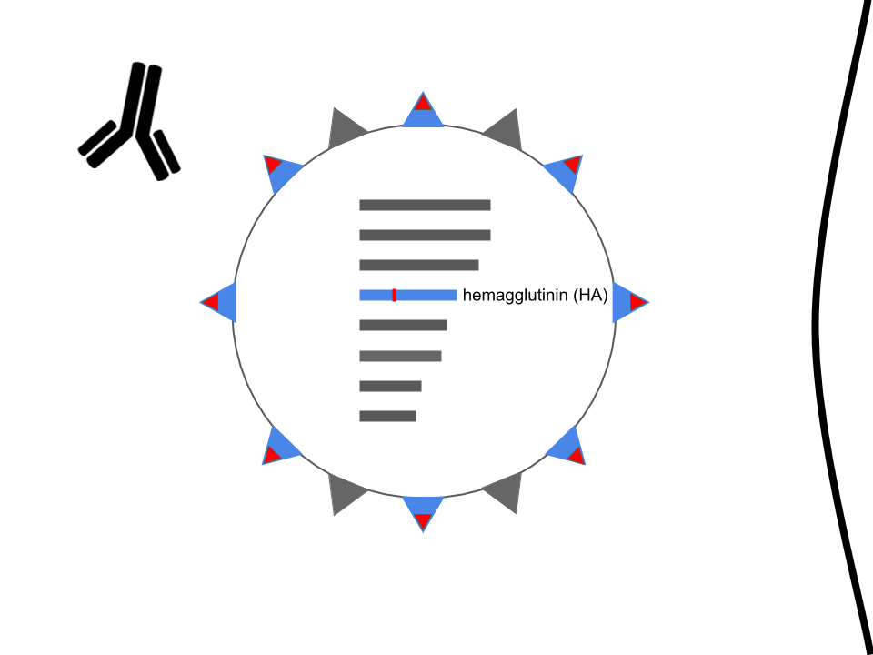
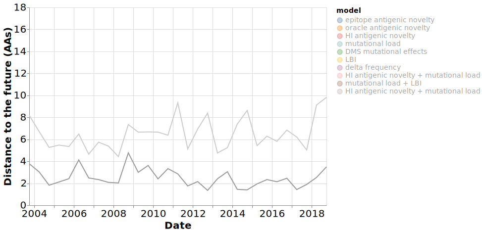
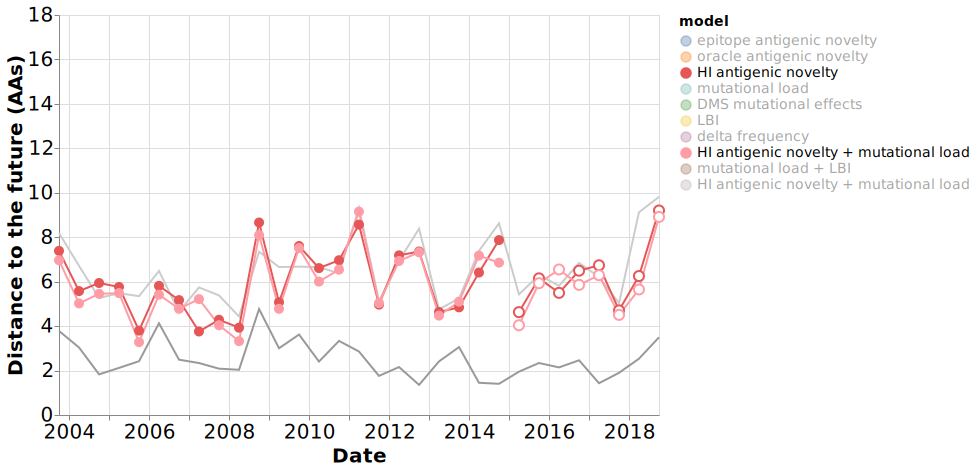

Improved forecasts and visualization of seasonal influenza evolution
John HuddlestonDecember 7, 2020
Seasonal influenza kills hundreds of thousands of people every year
Photo: WHO / Tom Pietrasik
Surface proteins determine
influenza virus subtypes like H3N2
Hemagglutinin enables infection
Hemagglutinin is the primary target of our immune system

Mutations in hemagglutinin allow viruses to escape existing immunity

Mutations in hemagglutinin allow viruses to escape existing immunity

New vaccines take 6-7 months to make and distribute
The Global Influenza Surveillance and Response System tracks influenza year-round
{kind=link}
Hemagglutination inhibition (HI) assays identify viruses that could escape our immunity
Hemagglutination inhibition (HI) assays identify viruses that could escape our immunity
Hemagglutination inhibition (HI) assays identify viruses that could escape our immunity

Ferret immune responses provide the gold standard measure of viral immune escape
Photo: Ohio Department of Health
Surveillance groups also sequence the genetic code of viruses

Mutations in viral genomes tag specific viruses

Mutations allow us to reconstruct viral trees

Genetic trees reveal closely related groups of viruses known as clades

Rapid branching in trees indicates
recent clade success

Neher et al. 2014
Change in clade frequency also measures recent success
Change in clade frequency also measures recent success
Clades with beneficial mutations could be successful in the future
Luksza and Lassig 2014
How do we know which mutations are beneficial?

Petrova and Russell 2017
Mutations that rapidly rise to 100% global frequency might be beneficial
Shih et al. 2007
Epitope and non-epitope mutations might distinguish beneficial and detrimental effects
|
Epitope sites |
Non-epitope sites |
Shih et al. 2007
Luksza and Lassig 2014
Luksza and Lassig 2014
Measuring effects of mutations has been historically difficult
Juhye Lee
Jesse Bloom
Photos: Robert Hood / Fred Hutch News Service
Deep mutational scanning (DMS) enables high-throughput measurements of mutational effects
Lee and Huddleston et al. 2018
Juhye Lee measured mutational effects in seasonal influenza H3N2
Lee and Huddleston et al. 2018
Juhye Lee measured mutational effects in seasonal influenza H3N2
Lee and Huddleston et al. 2018
DMS preferences estimate mutational tolerance
Lee and Huddleston et al. 2018
DMS preferences estimate mutational effects
Lee and Huddleston et al. 2018
DMS preferences estimate mutational effects
Lee and Huddleston et al. 2018
Do mutational effects from the lab match success of those mutations in nature?
Lee and Huddleston et al. 2018
We compared mutational effects in the lab with mutation frequencies in nature
Lee and Huddleston et al. 2018
Success in nature correlates
with DMS mutational effects
Lee and Huddleston et al. 2018
Success in nature correlates
with DMS mutational effects
Lee and Huddleston et al. 2018
Can we make better influenza forecasts?
Richard Neher
Trevor Bedford
Photo (right): Robert Hood / Fred Hutch News Service
Genetic and experimental metrics
estimate viral fitness
Models estimate future populations by projecting forward current populations
Huddleston et al. 2020
Models estimate future populations by projecting forward current populations

Huddleston et al. 2020
Models estimate future populations by projecting forward current populations
Huddleston et al. 2020
Models estimate future populations by projecting forward current populations

Huddleston et al. 2020
Models estimate future populations by projecting forward current populations
Huddleston et al. 2020
Earth mover's distance accounts for frequency and genetic distance between populations
Rubner et al. 1998
Earth mover's distance accounts for frequency and genetic distance between populations
Rubner et al. 1998
Accurate forecasts minimize earth mover's distance between populations
Time-series cross-validation enables test of model accuracy with true forecasts
Huddleston et al. 2020
Distance to the future through time revealed model accuracies
Huddleston et al. 2020
Naive model and optimum set bounds for model accuracy

Huddleston et al. 2020
Epitope mutations metric works when you know the sites in advanced
Huddleston et al. 2020
HI outperformed epitope mutations
Huddleston et al. 2020
Mutational load outperformed DMS mutational effects
Huddleston et al. 2020
Local branching index outperformed recent change in frequency
Huddleston et al. 2020
Composite models outperformed individual models

Huddleston et al. 2020
HI and mutational load outperformed other composite models on test data
Huddleston et al. 2020
Models partially capture clade growth dynamics
Huddleston et al. 2020
Models capture clade growth dynamics
Huddleston et al. 2020
How well can models identify a single strain for the vaccine?
Huddleston et al. 2020
How well can models identify a single strain for the vaccine?
Estimated closest strains to the future are often among the observed closest
Huddleston et al. 2020
Estimated and observed strain ranks correlate
Huddleston et al. 2020
Models could have selected strains closer to the future than selected vaccine strains
Huddleston et al. 2020
Best model outperforms naive model when ranking all strains
HI + mutational load
naive
Huddleston et al. 2020
Nextstrain provides real-time influenza forecasts
Huddleston et al. 2020
Nextstrain provides real-time influenza forecasts
We can still improve forecasting models
Improve estimates of model uncertainty
Account for delays in data availability
Model migration rates between regions
Model the human immune landscape
Antigenic escape mapping experiments measure mutations that escape human immunity
Lee et al. 2019
Antigenic escape mutations reveal a complex human immune landscape
Lee et al. 2019
Hilton and Huddleston et al. 2020
Hilton and Huddleston et al. 2020
Thank you!
|
Bedford Lab
Neher Lab
|
Data Sources
CDC Influenza Division
|
Funding |
Acknowledgements
Acknowledgments
Sarah Hilton
Photo: Robert Hood / Fred Hutch News Service
Appendix
Virus populations grow exponentially by fitness
Model coefficients represent how important a metric is to viral success
Models predicted clade frequencies from genetic data
Coefficients through time revealed model consistency
Huddleston et al. 2020
Many challenges to accurate forecasts remain.
Few sequences from the pandemic exist
Even before the pandemic, sequences lagged months behind sample collection